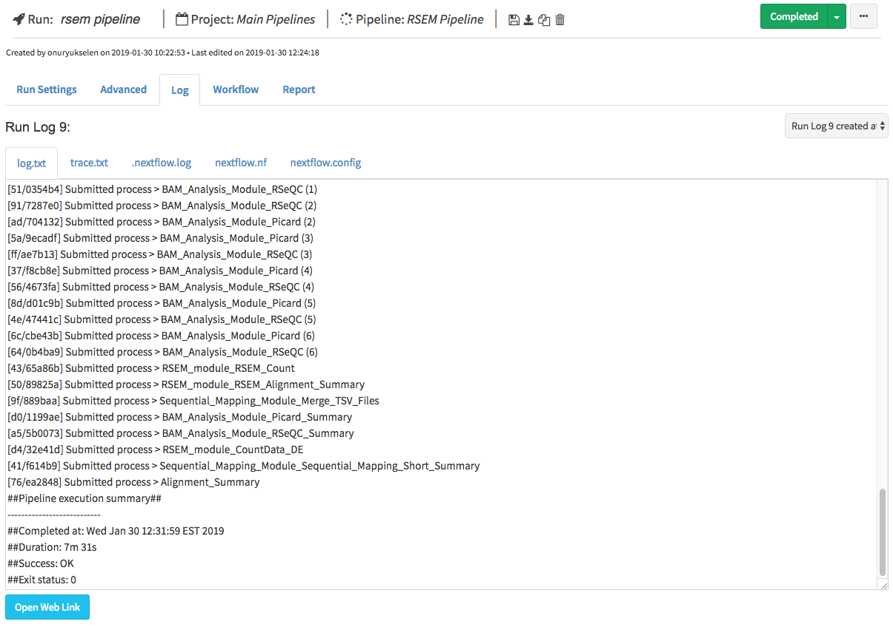

Run Guide¶
In the previous section (project guide), we saw the creation of project and adding pipelines to it. In this section, we will investigate the run settings to initiate our new run.
Basics¶
In the header of the run page, you will notice the rocket icon and the title of the run where you can also edit your run name. Tracking of your run is facilitated by project and pipeline links which are located just next to run name as shown at below:

Similar to pipeline section, Save, Download Pipeline, Copy Run and Delete Run icons are found in the header section to manage your run. Besides, optional Run Description section is exist just below the header section.
Run Status¶
Run status is monitored at the right part of the header. Initially, orange Waiting button is shown. In order to initiate run, following data need to be entered:
- Work Directory: Full path of the directory, where nextflow runs will be executed.
- Run Environment: Profile that is created in the profile page. If Amazon profile is selected, then status of the profile should to be at the stage of running.
- Inputs: Value and path of the files need to be entered.
Warning
If amazon s3 path is entered as a input or publish directory path, amazon keys (which will appear in the Run Setting section) need to be also selected.
All available status messages are listed at table below:
| Status | Meaning |
|---|---|
| Waiting | Waiting for inputs, output directory and selection of active environment (*amazon keys, if s3 path is used) |
| Ready | Ready to initiate run |
| Connecting | Sending SSH queries to selected host system |
| Waits | Job is submitted, waits for the execution |
| Running | Nextflow is executed and running the jobs. |
| Completed | Nextflow job is completed. |
| Run Error | Error occured before submiting the jobs or while executing the jobs. |
| Terminated | User terminated the run by using “terminate run” button. |
Run Settings¶
Work Directory: Full path of the directory, where all nextflow runs will be executed. Example paths:
~/workdir /home/newuser/workdir
Run Environment: Profile that is created in the profile page. If Amazon profile is selected, then status of the profile should to be at the stage of running.
Use Docker Image: Nextflow supports the Docker containers which allows you to create fully reproducible pipelines. Docker image can contain any kind of software that you might need to execute your pipeline. It works transparently and output files are created in the host system without requiring any addition step. The only requirement is the installation of the Docker on the execution platform. To activate this feature in DolphinNext just click the “Use Docker Image” checkbox and enter following information:
Image: Docker image name. Example:
nephantes/dolphinnext-docker
RunOptions (optional): You can enter any command line options supported by the docker run command. Please click this link for details.
Use Singularity Image: Alternative to Docker, you can activate singularity image by clicking “Use Singularity Image” checkbox and entering relevant fields. The only requirement is the installation of the Singularity on the execution platform.
Image: Path to sigularity image. Example:
project/umw_biocore/singularity/UMMS-Biocore-singularity-master.simg
RunOptions (optional): You can enter any command line options supported by the
singularity exec. Please click link for details. For instance, you can mount the directories by using--bind command. Example:--bind /project:/project --bind /nl:/nl --bind /share:/share
Tip
Mounting directories in singularity requires you to create the directories in the image beforehand.
Advanced Options¶
Run Command (optional): You may run the command or commands (by seperating each command with
&&sign) before the nextflow job starts. eg:source /etc/bashrc && module load java/1.8.0_31 && module load bowtie2/2.3.2
Publish Directory: Work directory is default publish directory for DolphinNext. If you want to enter new publish directory, just click this item and enter the full path of publish directory. Both local paths (eg.
/home/user/test) or amazon s3 paths (eg.s3://yourbucket/test) are accepted.Executor Settings for All Processes: If any option other than local and ignite is selected as nextflow executor in the profile, it is allowed to override and adjust these settings by clicking this item. Following settings will be prompted:
Queue,Memory(GB),CPUandTime(min.).Note
In case of non-standart resources or settings is required for executor, then you can specify these parameters by using Other options box. For instance, to submit SGE job with 3 CPU by using paralel environments, you may enter
-pe orte 3(to use MPI for distributed-memory machines) or-pe smp 3(to use OpenMP for shared-memory machines) in the Other options box and just leave the CPU box empty!Executor Settings for Each Process: You may change executor settings for each process and override to executor settings for all processes by clicking this item and clicking the checkbox of process that you want to change. This will only affect the settings of clicked process and keep the original settings for the rest. Similarly, following settings will be prompted for checked process:
Queue,Memory(GB),CPUandTime(min.).Delete intermadiate files after run: This is default settings for DolphinNext to keep only selected output files in the work/publish directory and removing the rest of the files. Here the main goal is to minimize the required space for each project.
Permissions and Groups: By default, all new runs are only seen by the owner. However, you can share your run with your group by changing permissions to “Only my groups” and choose the group you want to share from group selection dropdown.
Pipeline Files¶
This section is separated into two groups: inputs and outputs.
- Inputs: The input file paths or values are entered by clicking Select File or Enter Value button. In order to select multiple files, wildcard characters
*,?,[]and{}should be used. These arguments are interpreted as a glob path matcher by Nextflow and returns a list of paths that are matching the specified pattern. Several examples to define inputs are listed below:
| Input Type | Example |
|---|---|
| File/Set | /share/data/mm10.fa |
| File/Set | /share/validfastq/*_{1,2}.fastq |
| Val | pair |
| Val | ~/scripts/filter.py |
- Outputs: When the run successfully completes, the path of the output files will be appeared in this region.
Workflow¶
To give you an overview, overall pipeline and its description are showed in this region. You may hide it by clicking minus/plus icon just next to Workflow title.
Run Logs¶
Log section will appear below of the run description as soon as you click the “Ready to Run” button. You can monitor each step of the run both before and after nextflow execution as shown at figure below.
If any error occured on any of these steps, detailed explanation about the error will be displayed in this section and run error sign will appear in the right side of the header as show in the example below: